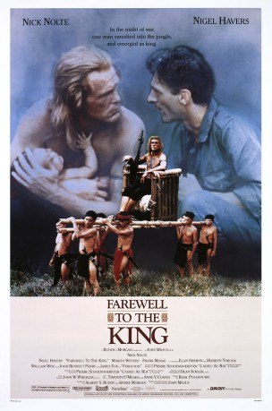
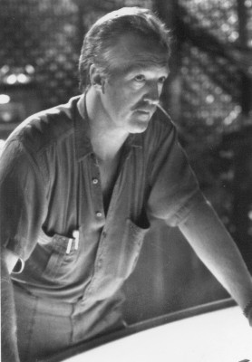

#8035 Der Dschungelkönig von Borneo
Alternativ: Farewell to the King
 
 IMDB-Wertung: 6.3 / 10
IMDB-Wertung: 6.3 / 10  Metascore: 0
Metascore: 0 
An American soldier who escapes the execution of his comrades by Japanese soldiers in Borneo during WWII becomes the leader of a personal empire among the headhunters in this war story told in the style of Joseph Conrad and Rudyard Kipling. The American is reluctant to rejoin the fight against the Japanese on the urging of a British commando team but conducts a war of vengeance when the Japanese attack his adopted people.
Jahr: 1989
Dauer: 109 Minuten
FSK:
Land: USA Studio: Orion PicturesTonspuren:
Untertitel: Deutsch,
Auflösung: 1080p (1920x1080) Größe: 8960 MB
Genre: Action, Drama, Abenteuer, Krieg
Regisseur: John Milius
Drehbuch: Pierre Schoendoerffer
Soundtrack: Basil Poledouris
Darsteller:
 Nigel Havers als Captain Fairbourne
Nigel Havers als Captain Fairbourne Frank McRae als Tenga
Frank McRae als Tenga- Gerry Lopez als Gwai
 Nick Nolte als Learoyd
Nick Nolte als Learoyd Aki Aleong als Colonel Mitamura
Aki Aleong als Colonel Mitamura-  Marius Weyers als Conklin
- Wayne Pygram als Bren Armstrong
 James Fox als Ferguson
James Fox als Ferguson- John Bennett Perry als General MacArthur
- Marilyn Tokuda als Yoo
- Chang Wing Choy als Lian
- William Wise als Dynamite Dave
- Richard Morgan als Strech Lewis
- Elan Oberon als Vivienne
- Michael Nissman als General Sutherland
Datei: X:\1989\Dschungelkönig von Borneo, Der (1989, FSK, 1920x1080).mkv seit 18.01.2018
Festplatte: HD 1987-1991
 Es gibt insgesamt 54 Filme in der Gruppe '1989'
Es gibt insgesamt 54 Filme in der Gruppe '1989'